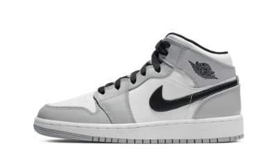

Selecione um modelo de Jordan
-

-

-

- 
Air Jordan 1 Mid SE Wmns 'Dutch Greenz
O Air Jordan 1 Mid SE 'Dutch Green' feminino suaviza a silhueta clássica com uma paleta pronta para a primavera composta de tons pastel contrastantes. Vários tons de verde claro são executados na parte superior de couro, acentuados com um Swoosh preto e um logotipo rosa Wings na aba lateral do colarinho. Cor-de-rosa correspondentes pousam nos cadarços do tênis e na lingueta trançada, apresentando a marca Jumpman padrão. O mid-top é montado em uma copa de borracha com amortecimento Nike Air encapsulado no calcanhar.